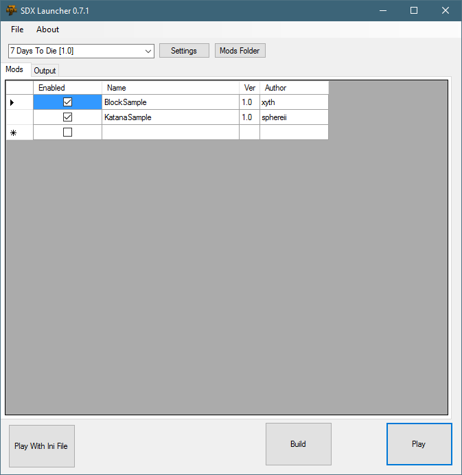
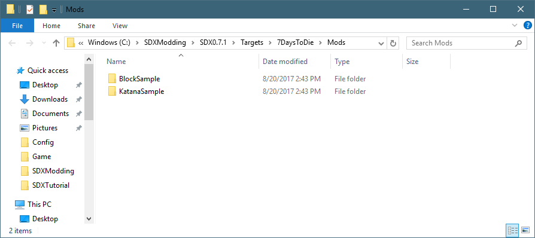
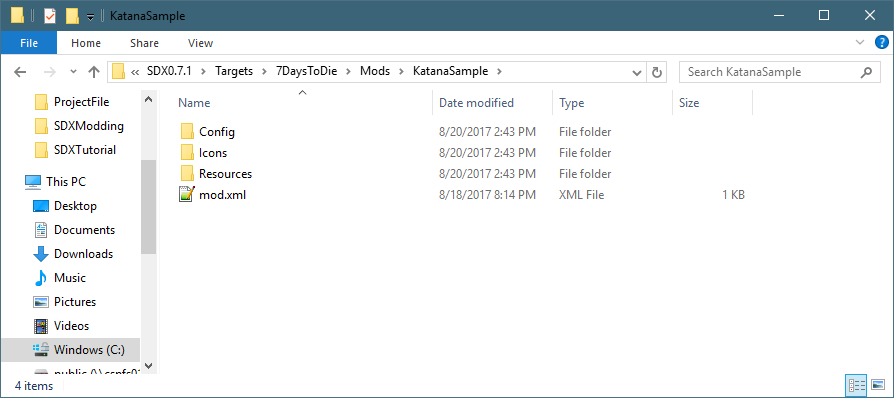
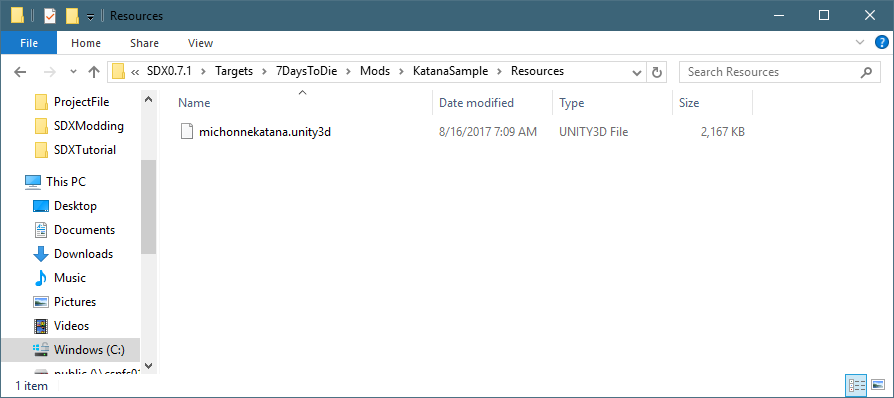

Start the SDX Launcher

Click on the "Mods Folder". This will open up the Explorer Window where the mods are installed.

Double click on the "KatanaSample" Folder, and look at the contents of the folder

The Config folder contains an XML file, that includes all the XML snippets and new items, blocks, and other items you want merged into SDX.
The Resources folder contains the Unity3D bundles, which are your textures for new items and blocks.
mod.xml is a basic XML configuration file for SDX.
The mod.xml gives information for the SDX Launcher, to show p in the tool.
<mod> <info> <author>sphereii</author> <name>Sample</name> <description>Sample Basic SDX Mod</description> <mod_version>1.0</mod_version> <game_version>16.2</game_version> <launcher_version>0.0.0</launcher_version> </info>
<!-- This references any config files that SDX needs to merge into your files --> <config_mods> <import file="Config\Sample.xml" /> </config_mods>
</mod> |
The <config_mods> points to where your mods' XML files are stored.
Note: The use of the Config.xml is optional. You can run your SDX Mod through the SDX7D2D without it merging any XML files. You can then edit your XML files as you normally would, in your game folder, and update the Meshfile.
Double click on the "Config" folder, and open up the KatanaSample.xml in Notepad++. This XML adds a katana bundle using a unity3d bundle for its mesh.
<configs> <!-- This tells SDX to add to the Items.xml --> <config name="items"> <!-- This tells SDX to add the following Items to the bottom of the Items list --> <append xpath="/items"> <!-- New item will be Katana --> <item id="" name="katanamichonne"> <!-- Extend it from the machete, but add the custom mesh --> <property name="Extends" value="machete"/> <property name="Meshfile" value="#michonnekatana?katana" /> </item> </append> </config> </configs> |
SDX will read this XML file, and add its contents to the right XML of the game. At the bottom of the file, it shows where it's adding the recipe on how to make a carrotBundle using your new items.
Sample Items Code |
Description |
<config name="items"> |
This tells SDX that everything in between the <config> tags will be included in the Items.xml file |
<append xpath="/items"> |
This tells SDX that everything in between the <Append> path will be included inside of the <items> tag of items.xml |
<item id="" name="karanamichonne"> |
This tells SDX the name of the new item to add. Notice there is no ID? This will be auto-generated to the lowest new number available. |
<property name="Meshfile" value="#michonnekatana?katana" /> |
This will tell SDX, at run time, what the meshfile is called. |
</append> |
Closes the append tag |
</config> |
Closes the Items tag |
The Resources folder contains all your Unity 3D models and textures, stored as Unity Bundle 3D files.

Created with the Personal Edition of HelpNDoc: Free Kindle producer